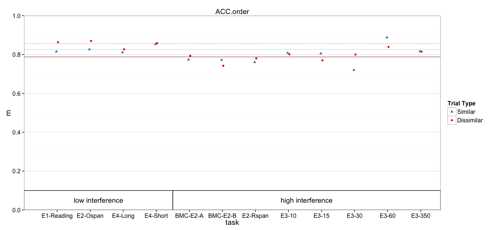

Multilevel model of accuracy
debug = FALSE
library(knitr)
opts_chunk$set(comment='', fig.width=14, fig.height=6.5)
opts_knit$set(self.contained=TRUE)
Read in data
DV_VAR = params$dv_var
all.dat = read.csv('data/1_scored.csv')
all.dat$Subject = factor(all.dat$Subject)
all.dat$dv = all.dat[,DV_VAR]
# Omit task, because Brooke thought effects were originally in other direction
# it's not clear if the data were preprocessed incorrectly (and raw data is
# not available)
dat = subset(all.dat, !task %in% 'Ospan.reg')
# Mark high and low interference conditions
low_int = c('spOspan.noVer', 'Ospan.scram.noVer', 'Rspan.names.long', 'Rspan.names.short', 'Ospan.reg')
dat$interference = ifelse(dat$task %in% low_int, 'low', 'high')
Models
dat$cond = paste(dat$interference, dat$trialtype)
contrasts(dat$trialtype) <- c(0,1) # similarity increment
Model with recall predictions for each interference:trialtype explicit
fit.mlm = lmer(dv ~ 0 + cond + (1 | task:Subject) + (1 | task), data=dat)
summary(fit.mlm)
Linear mixed model fit by REML ['lmerMod']
Formula: dv ~ 0 + cond + (1 | task:Subject) + (1 | task)
Data: dat
REML criterion at convergence: -507.1
Scaled residuals:
Min 1Q Median 3Q Max
-2.80132 -0.47517 0.07994 0.51863 1.67146
Random effects:
Groups Name Variance Std.Dev.
task:Subject (Intercept) 0.011410 0.10682
task (Intercept) 0.000000 0.00000
Residual 0.006525 0.08078
Number of obs: 368, groups: task:Subject, 184; task, 12
Fixed effects:
Estimate Std. Error t value
condhigh D 0.78811 0.01265 62.28
condhigh S 0.78741 0.01265 62.22
condlow D 0.85547 0.01578 54.20
condlow S 0.82632 0.01578 52.36
Correlation of Fixed Effects:
cndhgD cndhgS cndlwD
condhigh S 0.636
condlow D 0.000 0.000
condlow S 0.000 0.000 0.636
Same model contrast coded for similarity benefit
fit.mlm.con = lmer(dv ~ 0 + interference/trialtype + (1 | task:Subject) + (1 | task), data=dat)
summary(fit.mlm.con)
Linear mixed model fit by REML ['lmerMod']
Formula: dv ~ 0 + interference/trialtype + (1 | task:Subject) + (1 | task)
Data: dat
REML criterion at convergence: -507.1
Scaled residuals:
Min 1Q Median 3Q Max
-2.80132 -0.47517 0.07994 0.51863 1.67146
Random effects:
Groups Name Variance Std.Dev.
task:Subject (Intercept) 0.011410 0.10682
task (Intercept) 0.000000 0.00000
Residual 0.006525 0.08078
Number of obs: 368, groups: task:Subject, 184; task, 12
Fixed effects:
Estimate Std. Error t value
interferencehigh 0.788111 0.012655 62.28
interferencelow 0.855470 0.015783 54.20
interferencehigh:trialtype1 -0.000697 0.010795 -0.06
interferencelow:trialtype1 -0.029153 0.013463 -2.17
Correlation of Fixed Effects:
intrfrnch intrfrncl intrfrnch:1
interfrnclw 0.000
intrfrnch:1 -0.427 0.000
intrfrncl:1 0.000 -0.427 0.000
Why is task variance estimated to be 0?
Sanity check, injecting noise at task level. Note the accurate task variance estimates.
tmp_dat = ddply(dat, .(task), transform, dv = dv + rnorm(1, sd=.1))
fit.mlm2 = lmer(dv ~ 0 + cond + (1 | task:Subject) + (1 | task), data=tmp_dat)
summary(fit.mlm2)
Linear mixed model fit by REML ['lmerMod']
Formula: dv ~ 0 + cond + (1 | task:Subject) + (1 | task)
Data: tmp_dat
REML criterion at convergence: -479.3
Scaled residuals:
Min 1Q Median 3Q Max
-2.77138 -0.45178 0.07409 0.51153 1.72062
Random effects:
Groups Name Variance Std.Dev.
task:Subject (Intercept) 0.011624 0.10781
task (Intercept) 0.011577 0.10760
Residual 0.006525 0.08078
Number of obs: 368, groups: task:Subject, 184; task, 12
Fixed effects:
Estimate Std. Error t value
condhigh D 0.77871 0.04024 19.35
condhigh S 0.77802 0.04024 19.33
condlow D 0.91367 0.05610 16.29
condlow S 0.88452 0.05610 15.77
Correlation of Fixed Effects:
cndhgD cndhgS cndlwD
condhigh S 0.964
condlow D 0.000 0.000
condlow S 0.000 0.000 0.971
Another Sanity check, looking at task variance from ANOVA standpoint. Note that the F-value for task is 1 (no between task var beyond subject var)
fit.aov = aov(dv ~ interference + task + Error(task:Subject), data=dat)
Warning in aov(dv ~ interference + task + Error(task:Subject), data =
dat): Error() model is singular
summary(fit.aov)
Error: task:Subject
Df Sum Sq Mean Sq F value Pr(>F)
interference 1 0.247 0.24744 8.316 0.00443 **
task 10 0.223 0.02231 0.750 0.67679
Residuals 172 5.118 0.02975
---
Signif. codes: 0 '***' 0.001 '**' 0.01 '*' 0.05 '.' 0.1 ' ' 1
Error: Within
Df Sum Sq Mean Sq F value Pr(>F)
Residuals 184 1.218 0.006621
Confidence Intervals
Computing bootstrap confidence intervals ...
2.5 % 97.5 %
sd_(Intercept)|task:Subject 0.09100275 0.12028311
sd_(Intercept)|task 0.00000000 0.03233799
sigma 0.07247668 0.08920689
condhigh D 0.76279994 0.81273804
condhigh S 0.76217617 0.81278560
condlow D 0.82463146 0.88620066
condlow S 0.79517730 0.85690736
Computing bootstrap confidence intervals ...
2.5 % 97.5 %
sd_(Intercept)|task:Subject 0.09128229 0.120688905
sd_(Intercept)|task 0.00000000 0.031997912
sigma 0.07232912 0.088864827
interferencehigh 0.76337332 0.812865964
interferencelow 0.82424815 0.886133118
interferencehigh:trialtype1 -0.02166655 0.020438600
interferencelow:trialtype1 -0.05577530 -0.002616637
Cohen's d
Here, I divided group differences by either the residual variance, or between-subject variance + residual variance.
$d_high
BOOTSTRAP CONFIDENCE INTERVAL CALCULATIONS
Based on 10000 bootstrap replicates
CALL :
boot.ci(boot.out = booted, type = c("norm", "perc"), index = ii)
Intervals :
Level Normal Percentile
95% (-0.1897, 0.1790 ) (-0.1895, 0.1783 )
Calculations and Intervals on Original Scale
$d_low
BOOTSTRAP CONFIDENCE INTERVAL CALCULATIONS
Based on 10000 bootstrap replicates
CALL :
boot.ci(boot.out = booted, type = c("norm", "perc"), index = ii)
Intervals :
Level Normal Percentile
95% (-0.4887, -0.0203 ) (-0.4946, -0.0226 )
Calculations and Intervals on Original Scale
$d_sub_high
BOOTSTRAP CONFIDENCE INTERVAL CALCULATIONS
Based on 10000 bootstrap replicates
CALL :
boot.ci(boot.out = booted, type = c("norm", "perc"), index = ii)
Intervals :
Level Normal Percentile
95% (-0.1386, 0.1307 ) (-0.1385, 0.1297 )
Calculations and Intervals on Original Scale
$d_sub_low
BOOTSTRAP CONFIDENCE INTERVAL CALCULATIONS
Based on 10000 bootstrap replicates
CALL :
boot.ci(boot.out = booted, type = c("norm", "perc"), index = ii)
Intervals :
Level Normal Percentile
95% (-0.3563, -0.0153 ) (-0.3606, -0.0167 )
Calculations and Intervals on Original Scale
Plotting
Means and Standard Errors
The following `from` values were not present in `x`: Ospan.reg
p +
geom_rect(aes(x=NULL, y=NULL, shape=NULL,xmin=xmin, xmax=xmax, ymin=ymin, ymax=ymax),
color='black', fill='white', data=group_annot) +
geom_text(aes(shape=NULL, color=NULL, x=text.x, y=text.y, label=label),
show_guide=FALSE, data=group_annot) + pub_theme + colors + shapes
Scale for 'colour' is already present. Adding another scale for 'colour', which will replace the existing scale.
Scale for 'shape' is already present. Adding another scale for 'shape', which will replace the existing scale.
ymax not defined: adjusting position using y instead

title: "1_mlm.R" author: "machow" date: "Mon Nov 23 16:33:26 2015"